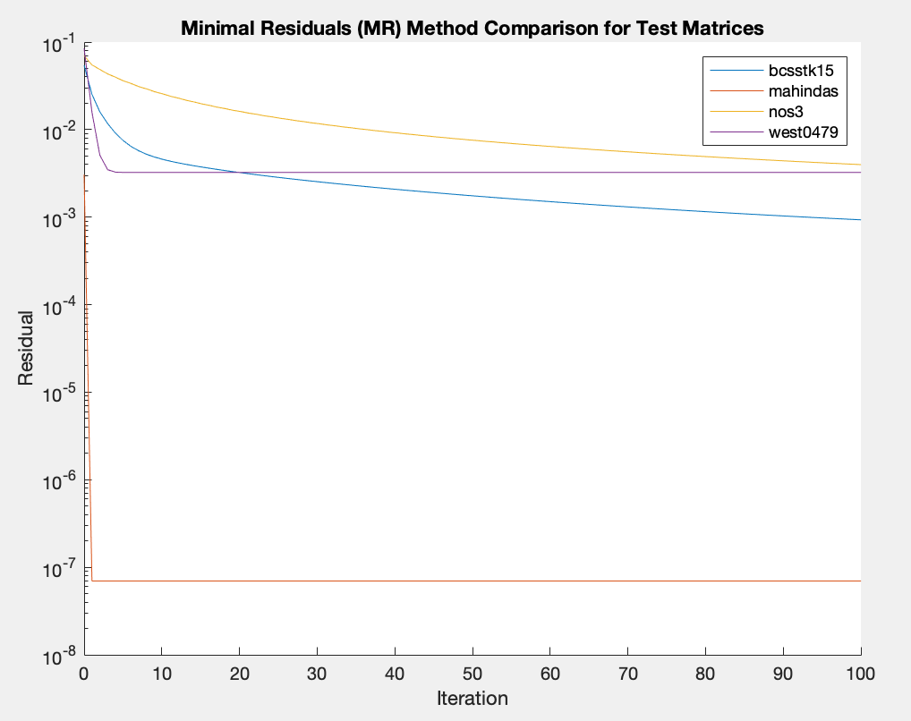
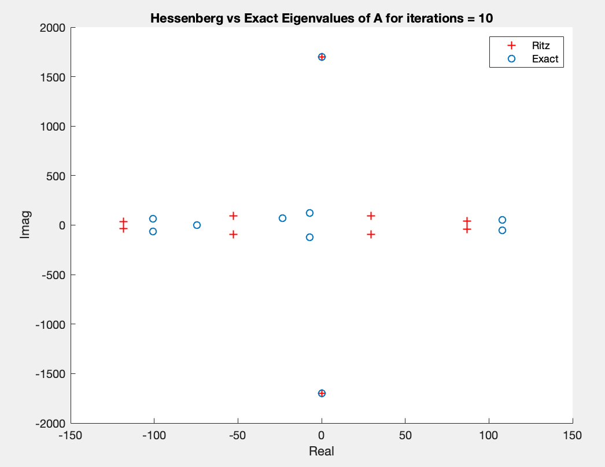

Iterative subspace projection methods are used for solving large sparse linear systems (i.e. Ax = b). We implement the Steepest Descent (SD), Conjugate Gradient (CG), Minimal Residual (RM) and Restarted GMRES algorithms to study the convergence behaviors of these methods for the matrices bcsstk15, mahindas, nos3 and west0479 from The University of Florida Sparse Matrix Collection. The matrices are shown below.
The investigated parameters in this report will be the residuals and the eigenvalues.
In this section, functions for each of the methods were written using MATLAB. A pseudo code implementation will be presented in the main report and the code will be provided in the appendix. These will be verified using the built in methods (i.e. gmres, cg). Then the implementations will be run on the test matrices.
The Steepest Descent (SD) method solves Ax = b for symmetric positive definite (SPD) matrices. The algorithm is presented in Subspace projection methods for LS Lecture on slide 16. [1]
%% Steepest Descent (SD) Method
clc
close all
clear all
run('load_test_matrices.m');
mats = ["bcsstk15", "mahindas", "nos3", "west0479"];
maxiter = 100; tol = eps;
figure; set(gca,'yscale', 'log'); hold on;
for i = 1:length(mats)
A = eval(mats(i));
n = size(A, 1);
b = randi(100, n, 1);
actual_sol = A\b;
xk = ones(n, 1);
[xk, norm_rks] = sd(A, b, xk, maxiter, tol);
iters = linspace(0, size(norm_rks, 2), size(norm_rks, 2));
plot(iters, norm_rks);
end
title('Steepest Descent (SD) Method Residuals Comparison for Test Matrices');
legend(mats);
xlabel('Iteration');
ylabel('Residual');
xlim([0, maxiter]);
function [xk, norm_rks] = sd(A, b, x0, maxiter, tol)
iter = 0; xk = x0; x_prev = inf; norm_rks = [];
while (norm(x_prev - xk) >= tol) & (iter <= maxiter)
iter = iter + 1;
rk = b - A*xk;
norm_rks = [norm_rks, norm(rk)/(norm(A, 1)*norm(xk) + norm(b))];
ak = rk'*rk/(rk'*A*rk);
xprev = xk;
xk = xk + ak*rk;
end
end
A is SPD only when $r_k > 0$. When $r_k = 0$, the algorithm has converged. Therefore, the stopping criterion is when $r_k \leq \epsilon$, where $\epsilon$ is machine precision, 2.2204e-16.
The Conjugate Gradient (CG) method solves Ax = b for SPD A. Theoretically, it yields an exact solution in n steps. The algorithm from Linear Algebra and Learning from Data by Gilbert Strang is shown below. [2]
%% Conjugate Gradient (CG) Method
clc
close all
clear all
run('load_test_matrices.m');
A = bcsstk15;
n = size(A, 1);
b = randi(10, n, 1);
x0 = b/norm(b);
run('load_test_matrices.m');
mats = ["bcsstk15", "mahindas", "nos3", "west0479"];
maxiter = 100; tol = eps;
figure; set(gca,'yscale', 'log'); hold on;
for i = 1:length(mats)
A = eval(mats(i));
n = size(A, 1);
b = randi(100, n, 1);
actual_sol = A\b;
x0 = b/norm(b);
[x, norm_rks] = conjgrad(A, b, x0, maxiter);
iters = linspace(0, size(norm_rks, 2), size(norm_rks, 2));
plot(iters, norm_rks);
end
title('Conjugate Gradient (CG) Method Residuals Comparison for Test Matrices');
legend(mats);
xlabel('Iteration');
ylabel('Residual');
xlim([0, 100]);
hold off;
function [x, norm_rks] = conjgrad(A, b, x, maxiter)
r = b - A*x;
d = r;
r2_prev = r'*r;
norm_rks = [r2_prev];
for i = 1:maxiter
Ad = A*d;
alpha = r2_prev/(d'*Ad);
r = r - alpha*Ad;
x = x + alpha*d;
norm_rks = [norm_rks, norm(r)/(norm(A, 1)*norm(x) + norm(b))];
r2 = r' * r;
if r2 < 1e-10
break;
end
beta = r2/r2_prev;
d = r + beta*d;
r2_prev = r2;
end
end
The conjugate method minimizes the error $||x - x_k||_S$ over the kth Krylov subspace, where $x_k$ is the orthogonalized subspace $K_m$. The stopping criterion is when $r_k \leq \epsilon$, where $\epsilon$ is machine precision, 2.2204e-16.
The Minimal Residual (MR) Iteration Method solves Ax = b for a nonsymmetric and nonsingular matrix A. This is similar to the SD method. But in this case, $\alpha_k = \frac{r_k^T A^T r_k}{r_k^T A^T A r_k}$. he algorithm is presented in Subspace projection methods for LS Lecture on slide 21. [1]
%% Minimal Residual (MR) Method
clc
close all
clear all
run('load_test_matrices.m');
mats = ["bcsstk15", "mahindas", "nos3", "west0479"];
maxiter = 100; tol = eps;
figure; set(gca,'yscale', 'log'); hold on;
for i = 1:length(mats)
A = eval(mats(i));
n = size(A, 1);
b = randi(100, n, 1);
actual_sol = A\b;
xk = ones(n, 1);
[xk, norm_rks] = mr(A, b, xk, maxiter, tol);
iters = linspace(0, size(norm_rks, 2), size(norm_rks, 2));
plot(iters, norm_rks);
end
title('Minimal Residuals (MR) Method Comparison for Test Matrices');
legend(mats);
xlabel('Iteration');
ylabel('Residual');
xlim([0, maxiter]);
hold off;
function [xk, norm_rks] = mr(A, b, x0, maxiter, tol)
iter = 0; xk = x0; x_prev = inf; norm_rks = [];
while (norm(x_prev - xk) >= tol) & (iter <= maxiter)
iter = iter + 1;
rk = b - A*xk;
norm_rks = [norm_rks, norm(rk)/(norm(A, 1)*norm(xk) + norm(b))];
ak = rk'*(A')*rk/(rk'*(A')*A*rk);
xprev = xk;
xk = xk + ak*rk;
end
end
Each iteration minimizes $f(x)\equiv ||r||^2_2 = ||{b - Ax}||^2_2$. The stopping criterion is when $r_k \leq \epsilon$, where $\epsilon$ is machine precision, 2.2204e-16.
The Restarted GMRES (GMRES(k)) uses Krylov subspaces as pair of projection subspaces. It is a generalization of the one-dimensional MR iteration. The Krylov subspaces are generated and orthogonalized using the Arnoldi Iteration. This can be represented by the equations
where A has dimensions $n\times n$, $V_m$ has dimensions $n\times m$, $V_{m+1}$ has dimensions $n\times (m+1)$, the Hessenberg $H_m$ has dimensions $m\times m$, $\hat{H}m$ has dimensions $(m+1)\times m$, $h{m+1,m}$ is a scalar, $v_{m+1}$ is a columns vector of dimensions $(m+1)\times 1$ and $e_m$ is a unit vector of size $m \times 1$.
The Arnoldi algorithm is presented in Subspace projection methods for LS Lecture on slide 25.[1]
$v_1 = \frac{v}{||v||}$ for$\;j = 1,2,…,m$ $w = Av_j$ for $\;i = 1,2,…,j$ $h_{ij} = v_i^T w$ $w = w - h_{ij}v_i$ end $h_{j+1,j} = ||w||2$ $if\;h{j+1,j} = 0, stop$ $v_{j+1} = \frac{1}{h_{j+1,j}}$
$H_k = Q^T_k A Q_k$ is the projection of A onto the Krylov space using the columns of $Q$. [2] A version for re-orthogonalization was implemented.
The GMRES algorithm is presented in Subspace projection methods for LS Lecture on slide 19.[1]
%% Restarted GMRES Method
clc
close all
clear all
run('load_test_matrices.m');
mats = ["bcsstk15", "mahindas", "nos3", "west0479"];
maxiter = 100; tol = eps;
figure; set(gca,'yscale', 'log'); hold on;
for i = 1:length(mats)
A = eval(mats(i));
n = size(A, 1);
b = randi(100, n, 1);
actual_sol = A\b;
xk = ones(n, 1);
[xk, norm_rks] = gm(A, b, xk, maxiter);
iters = linspace(0, size(norm_rks, 2), size(norm_rks, 2));
plot(iters, norm_rks);
end
title('Restarted GMRES Method Comparison for Test Matrices');
legend(mats);
xlabel('Iteration');
ylabel('Residual');
xlim([0, maxiter]);
function [xk, norm_rks] = gm(A, b, xk, maxiter)
norm_rks = [];
n = maxiter;
for i = 1:100
[Q, H] = arnoldi(A, xk, maxiter);
be1 = zeros(n+1, 1); be1(1) = norm(b);
y = H\be1;
xk = xk + Q(:, 1:end-1)*y;
norm_rks = [norm_rks, norm(H*y - be1)/norm(b)];
end
end
function [Q, H] = arnoldi(A, v, m)
n = size(A, 1);
H = zeros(m+1, m);
Q = zeros(n, m+1);
Q(:, 1) = v/norm(v);
for k = 1:m
v = A*Q(:, k);
for j = 1:k
H(j, k) = Q(:, j)'*v;
v = v - H(j, k)*Q(:, j);
end
H(k+1, k) = norm(v);
Q(:, k+1) = v/H(k+1, k);
end
end
The least squares problem provides a solution. The Arnoldi procedure breaks down when $h_{j+1,j} = 0$ at some step j and this is when $x_j$ is the exact solution of the linear system Ax = b.
The residuals for the Steepest Descent, Minimal Residuals and Conjugate Gradient methods were computed using the formula
The residuals for the Conjugate Gradient methods were computed using the formula
In this part, the Arnoldi method with and without reorthogonalization are used to to compute eigenpairs of large sparse matrix A (west0479) for different iterations. This was compared to the “exact” eigenvalues computed using the eig function in MATLAB. The real and imaginary values are plotted and discussed.
The Arnoldi (with Reorthogonalization) code is modified so that he reorthogonalization is not done. The correctness of the code is verified using The orthogonality is evaluated using the residual
A method to attain eigenvalues is to use the eigenvalues of the Hessenberg matrix $H_j$. These are computed using the eig command. The Ritz values and the exact eigenvalues together. In theory, the outlying eigenvalues are good approximations for the Ritz values.
The shift and invert spectral transform are used to find the eigenvalues closest to a target. Instead of multiplying the initial vector by A, the vector is multiplied by $(A - \tau I)^{-1}$, where $\tau$ is the target. This is similar to the power method with shift and inversion. The eigenvalues problem now becomes
The eigenvalue ($\lambda_j$) closest to $\tau$ of the shifted and inverted problem $\sigma = \frac{1}{\lambda_j - \tau}$ is now dominant and thus leads to a smaller residual. The residuals can be proved to be [3]
From this form, we see that the residual ($r_j$) is bounded by zero if $\lambda$ is a good estimate for $\tau$.
From the plot, we see that only the bcsstk15 and the nos3 display convergent behavior. This is expected because mahindas and west0479 are non SPD matrices.
Similar to the Steepest Descent method, from the plot, we see that only the bcsstk15 and the nos3 display convergent behavior. This is expected because mahindas and west0479 are non SPD matrices.

From the plot, we see that only bcsstk15, nos3 and west0479 are converging. mahindas is not because it is non invertible. This can be seen by taking the determinant of mahindas, which is computed to be -1.0008e-20.
From the plot, we see that only nos3, mahindas and west0479 are converging. Interestingly, bcsstk15 does not appear to converge quickly.
To check my correctness of the Reorthogonalized Arnoldi Algorithm, was computed for 30 iterations to be 2.6297e-12. Similarly, for the Arnoldi without reorthogonalization, was computed to be 2.2025e-12. Both of these are approximately zero, despite being 4 orders of magnitude smaller than machine precision.
The orthogonality was evaluated using the residual . At 30 iterations, these were computed to be 1.1814e-15 for the Reorthogonalized Arnoldi Algorithm and 4.3886e-13 for the Non-Reorthogonalized Algorithm. Also, at 60 iterations, the Non-Reorthogonalized Algorithm residual the residual was 8.9316e-12. From these results, it is evident that $V_{j+1}$ loses orthogonality. Therefore, in practice, it is a good idea to implement the reorthogonalization. Furthermore, the residuals were computed to be 2.2025e-12 and 7.0673e-11 for 30 and 60 iterations.
The Ritz values were computed using the eig command and compared to the exact eigenvalues.

From the figures above, the eigenvalues are approximated well by the Ritz values. However, the number of iterations does not improve the eigenvalue approximations. The norm of the difference between the Reorthogonalized and the Non-Reorthogonalized eigenvalues were computed to be 528.5324 and 275.3189 for both algorithms. The shift-inversion spectral transformation converges to the dominant eigenvalue. The implementation was unsuccessful and did not yield good results.
I would like to thank Professor Zhaojun Bai who provided me with a wealth of knowledge about NUmerical Linear Algebra techniques to undertake investigation.
[1] Bai, Zhaojun. “Subspace Projection Methods for LS.” ECS231 Slides, web.cs.ucdavis.edu/ bai/ECS231/Slides/ls.pdf.
[2] Strang, Gilbert. Linear Algebra and Learning from Data. Wellesley-Cambridge Press, 2019.
[3] Jia, Zhongxiao, and Yong Zhang. “A Refined Shift-and-Invert Arnoldi Algorithm for Large Unsymmetric Generalized Eigenproblems.” Computers & Mathematics with Applications, vol. 44, no. 8-9, 2002, pp. 1117–1127., doi:10.1016/s0898-1221(02)00220-1.